Step 01

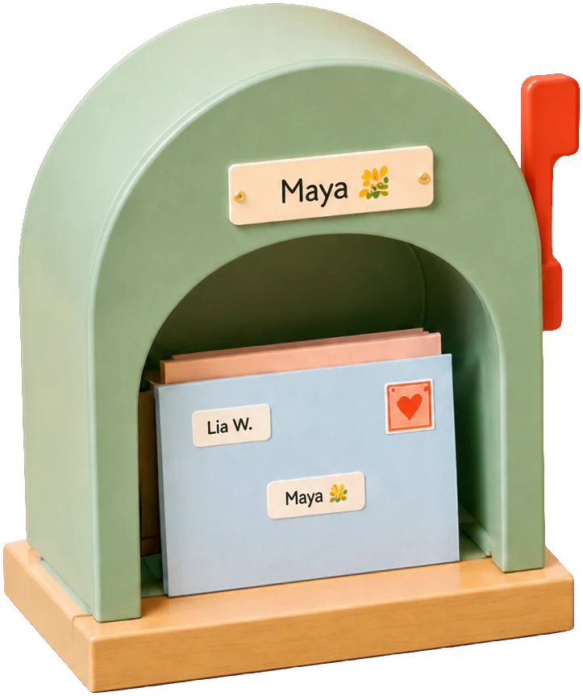
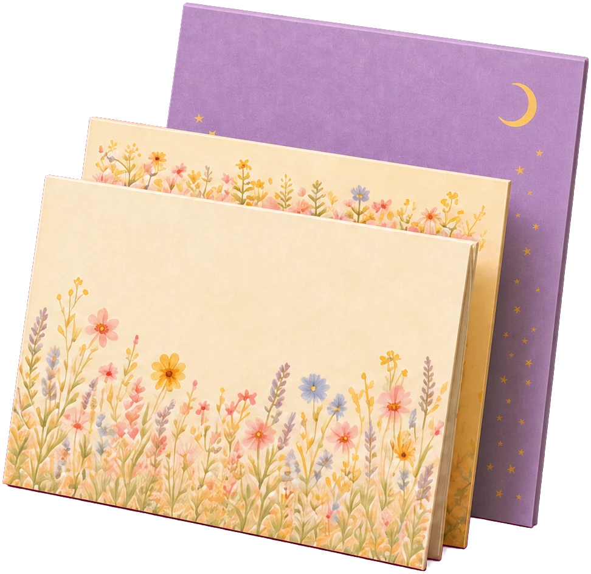
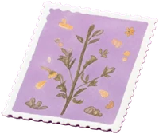
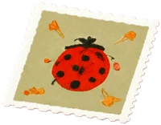
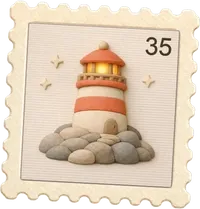
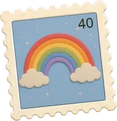
Texting can wait.
Write and draw digital letters with friends and family.
Coming first to iPad.
How it works


Real Letters
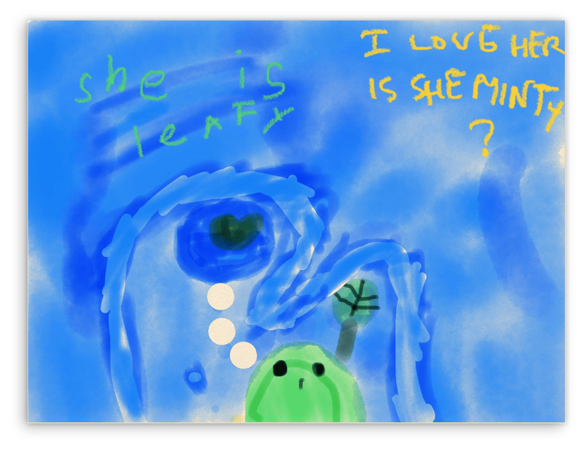
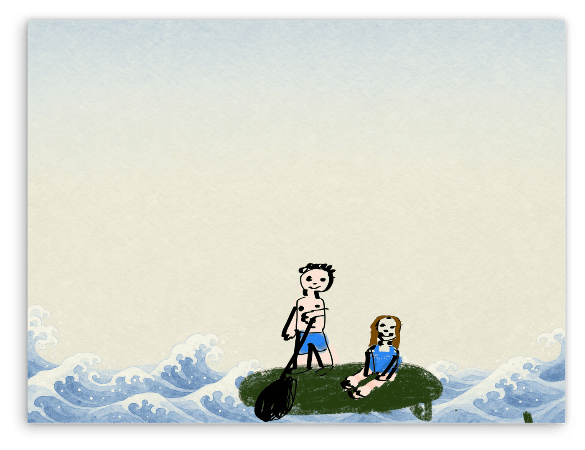
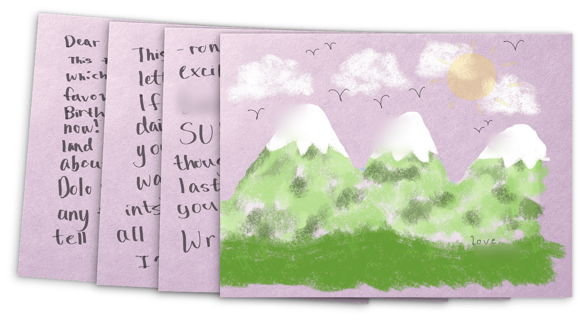
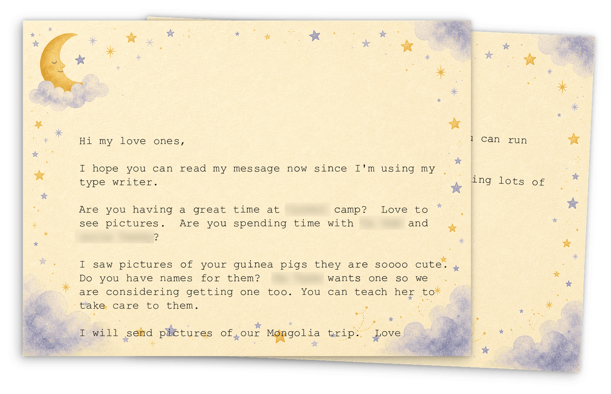
Collections
Each Collection is its own little world, with a desk, mailbox, papers, envelopes, stamps and stickers to match.

Toadstools, glowing lanterns, and dewdrops among mossy roots.
A few favorites, with more Collections to discover.
Shown here: the Fairy Glen Collection.

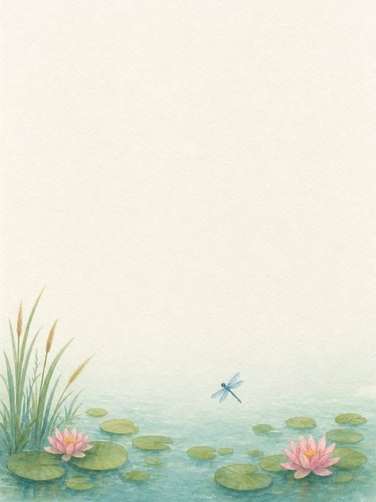
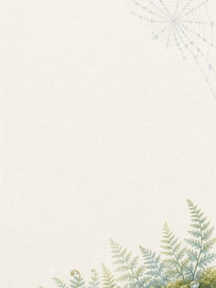
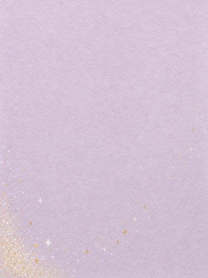

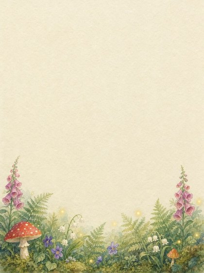

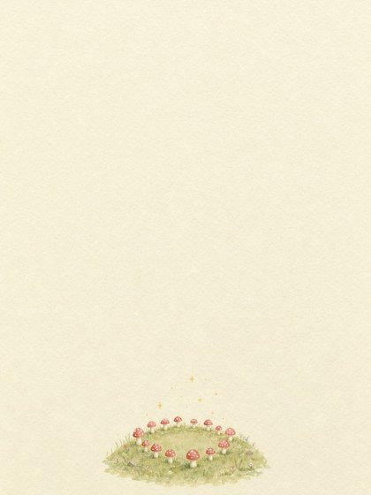
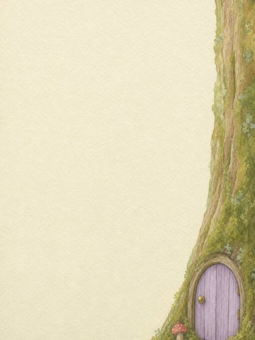


Why Postmello
I started Postmello when my daughter wanted to text her best friend. I wanted her to be able to stay in touch on her own - but I wondered whether messaging had to be the place where that began.
Postmello gives kids room to write, draw, be silly or thoughtful, and stay in touch independently.
Patrick, founder of Postmello Read the story
Letters by Email
Email only
Grandma can write from her regular inbox.
Postmello + email
You can still write by email when it’s easier.
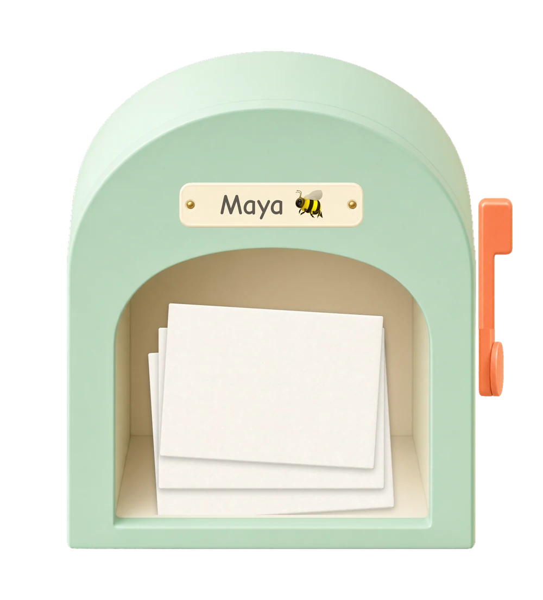
Same desk
Either way, the letter arrives on the Postmello desk.
01

02

03

Only approved email addresses can reply.Links, photos and attachments never reach the desk.
Designed differently
Messaging
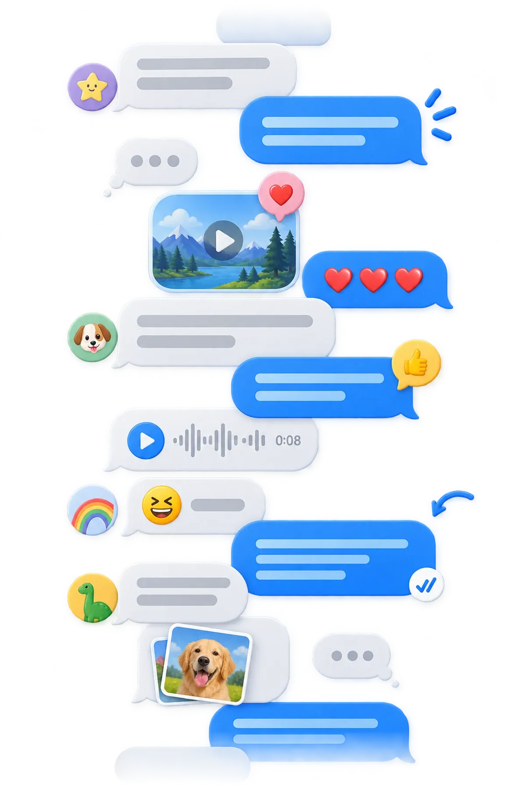
vs
Postmello
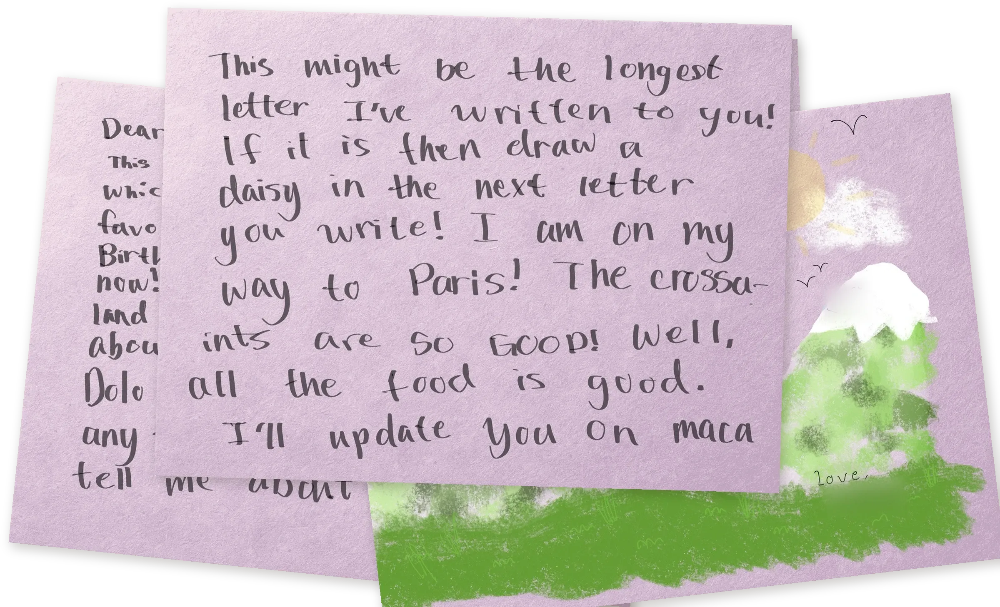
Designed for immediacy, and to keep conversation moving.
Designed for patience, and to be put down.
Safety
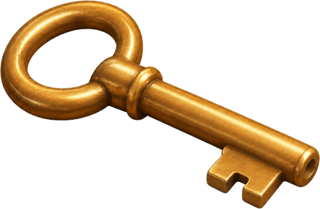
Adult settings, approvals and purchases stay behind the Postmello Key.
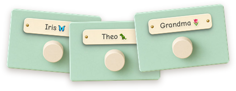
Every friend is approved before letters can be exchanged.
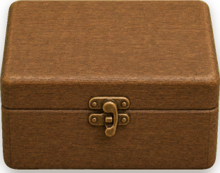
No public profiles, search, suggestions or open inboxes.
Under-13 desks stay closed until an adult approves the desk and completes verification.
Shaped with families in private beta
“She spent the last half hour writing notes and loved it. And she loves that a bee takes her mail away.”
“I love the whimsical spirit! It is so beautifully done! The entire space and the overall aesthetics are so charming and consistent around the slow, truly creative feel.”
Membership
When you want more desks at home, Membership brings everyone together.
1 desk
Free
Up to 4 desks
$19.99 / year $29.99
Founding rate stays while your Membership remains active.
Everything in Membership, with room for a bigger household.
A founding rate holds for as long as the membership stays active - each year renews at the founding price, not the regular one. If it lapses, rejoining is at whatever the price is then.
New places to write from.
From $1.99 · Members save 50%
Yours for good.

A toadstool cottage, a lantern and a jar of fireflies

A blossoming bonsai, a koi and a rice ball

A fox, an owl and a scatter of acorns

A dragon, a flame and a snowflake
Frequently Asked Questions
Write to the creators directly at hello@postmello.com. We reply to every letter.